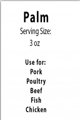
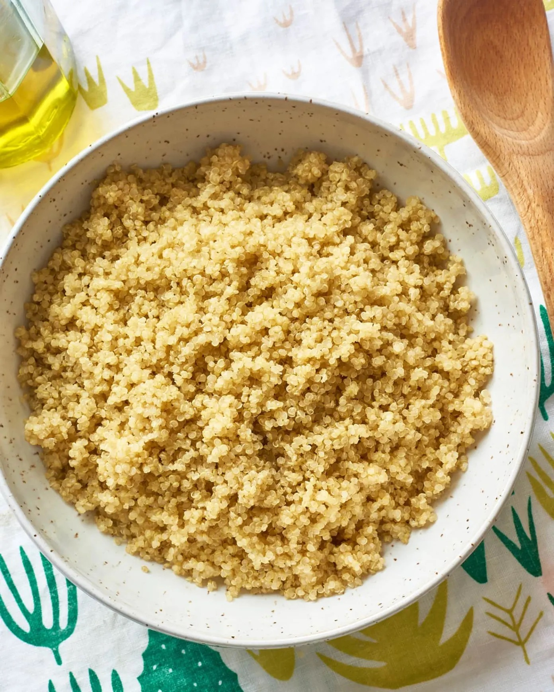

| item | serving | carb (g) | protein (g) | Fat (g) |
|---|---|---|---|---|
| bread |
1 slice | 15 g | 3 g | 0-1 g |
Biscuit |
1 piece | 15 g | 3 g | 0-1 g |
Chapatti, small |
1 piece | 15 g | 3 g | 0-1 g |
Flour |
3 Tbsp dry | 15 g | 3 g | 0-1 g |
Pancake |
1 piece | 15 g | 3 g | 0-1 g |
Pita Bread |
1/2 pocket | 15 g | 3 g | 0-1 g |
Taco Shell |
2 Crips Shells | 15 g | 3 g | 0-1 g |
Tortilla |
1 piece | 15 g | 3 g | 0-1 g |
waffle |
1 piece | 15 g | 3 g | 0-1 g |
Oat Bran |
1/4 cup | 15 g | 3 g | 0-1 g |
Unsweetened, ready-to-eat cereals |
3/4 cup | 15 g | 3 g | 0-1 g |
Pasta, cooked |
1/3 cup | 15 g | 3 g | 0-1 g |
|  Quinoa, cooked |
1/3 cup | 15 g | 3 g | 0-1 g |
Rice, white or brown, cooked |
1/3 cup | 15 g | 3 g | 0-1 g |
Corn |
1/2 cup | 15 g | 3 g | 0-1 g |
Potato, Baked with skin |
1/4 large | 15 g | 3 g | 0-1 g |
Potato, mashed with milk |
1/2 cup | 15 g | 3 g | 0-1 g |
Pumpkin |
1 cup | 15 g | 3 g | 0-1 g |
Popcorn, popped |
3 cups | 15 g | 3 g | 0-1 g |
Pretzels |
21 g | 15 g | 3 g | 0-1 g |
Rice cakes |
2 Piece | 15 g | 3 g | 0-1 g |